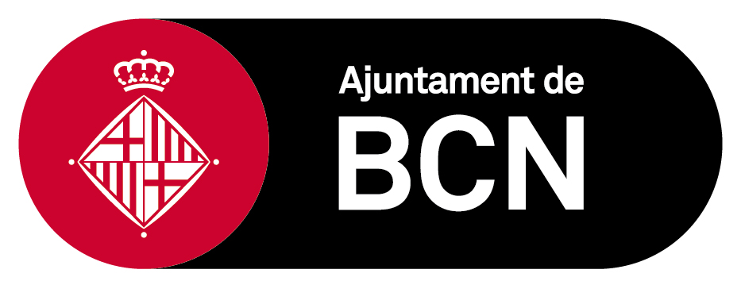

Missió i valors
Som una eina de gestió professional i de col·laboració amb l'administració i les organitzacions socials per resoldre, de forma inclusiva, necessitats humanes i vitals i, per tant, ens comprometem a:
- Reconèixer i fer visible la injustícia i les desigualtats socials, difondre-les i lluitar contra les seves conseqüències; promoure solucions i resoldre les situacions de necessitat humana: assistencials, formatives, laborals, socials, sanitàries, educatives, econòmiques i tecnològiques.
- Col·laborar amb les administracions, institucions públiques i privades i amb el teixit associatiu que tinguin per objectiu el desenvolupament del benestar i la solució de problemes socials.
- Promoure polítiques socials, necessàries i útils per a les persones i la societat, mitjançant la qualitat, la innovació, la modernització, la relació interdisciplinària i interdepedent dels serveis sociosanitaris, l'estalvi social, la transparència i la corresponsabilitat.
- Donar prioritat a la qualitat residencial de les persones ateses, centrada en la prevenció, la salut, el benestar, l'autonomia, la inclusió i l'empoderament personal.
Col·laboracions
Treballem amb diferents administracions públiques, entitats, universitats i empreses en la realització de projectes i programes dins l'àmbit de la integració i la cohesió social:
La nostra xarxa
Administracions públiques
Entitats
Universitats
Empreses


La nostra xarxa
Administracions públiques
Entitats
Universitats
Empreses